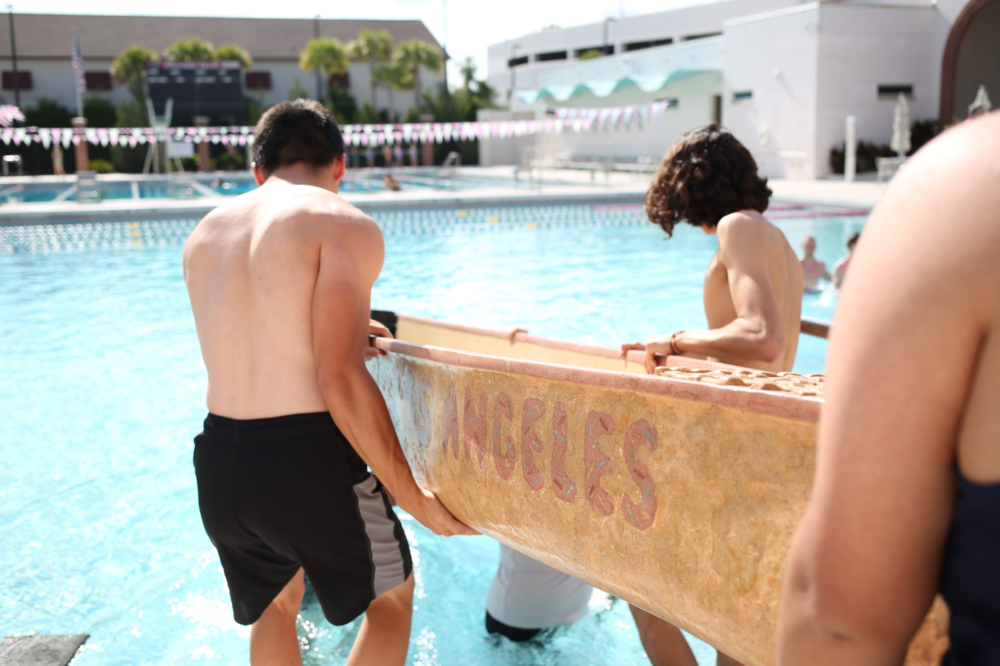
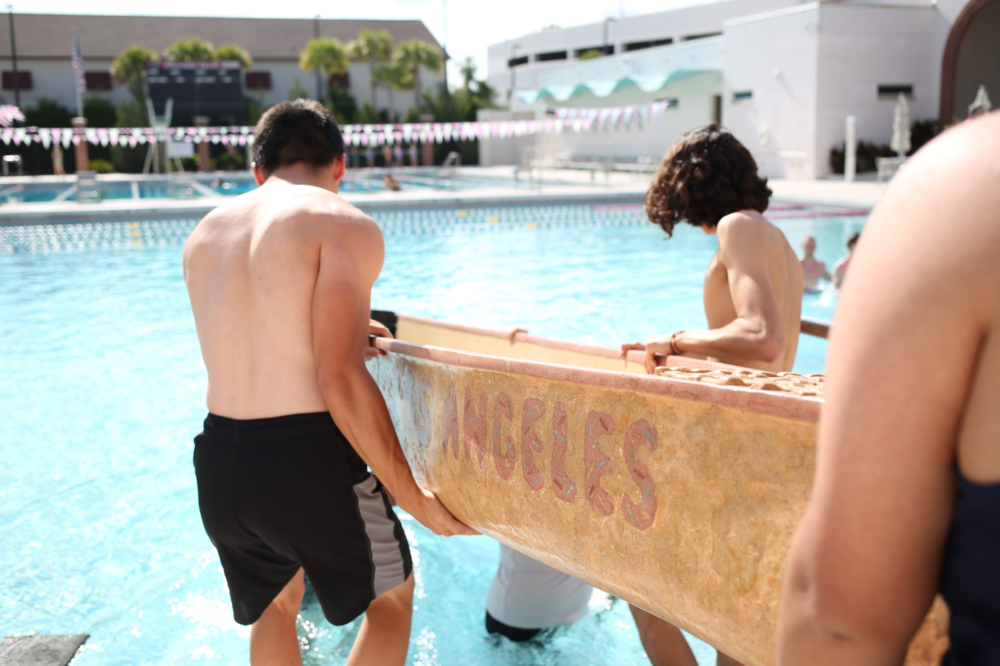

Every year we design and build a canoe made of concrete which is raced at regional and national conferences. We start Fall Quarter by designing a hull mold, practicing mix design, choosing a theme, and preparing the canoe mold for concrete. Once we have our final mix design, mold, and theme in place, we cast the canoe in less than a day. Paints are not allowed for competition, so part of the challenge is finding an effective method for casting dyed concrete while maintaining a defined design. In Winter Quarter, we sand, patch, stain and seal the canoe before competing at the Pacific Southwest Conference (PSWC). In addition to constructing the canoe, we make stands, a table displaying all materials used, and a cutaway section of the canoe for display day. Additionally, we submit a design paper prior to the conference and prepare an oral presentation.
Scoring for the competitions is based on four equally-weighted parts:
For PSWC, we achieved an overall 3rd place which allowed us to be in the wild card selection process for nationals. This year, we were fortunate enough to participate in the 2019 National Concrete Canoe Competition in Florida and placed 8th out of 20 schools!
insert_drive_fileDownload the final scoring sheetThis year, the UCLA concrete canoe set out to create the most creative, most simple, most unified, most down-to-earth theme: baked goods and desserts. Similar to mixing ingredients, kneading dough, and baking desserts, a concrete canoe requires a specific amount of materials, mixing, and time to cure. Totaling over 2700+ man hours and $3,824, the UCLA Concrete Canoe team is proud to present Sugar Rush, an exhilarating combination of exacting precision and aesthetic design.
As the hull design director for this year, I was tasked with creating a CNC'd foam male mold for us to cast concrete on. My work started during the summer where I learned the different aspects of canoe building. If you want to learn more about canoe design elements click here. To better adapt to the newly added 200m slalom course, I focused on increasing maneuverability without compromising straight-line tracking ability necessary for the sprint course. This was accomplished by reducing the length of La Sirena's 19.5ft mold to 19ft. the height of the canoe was left the same which meant the width was unconstrained. Three different hull widths were considered:
In previous years, the hull design team used AutoCAD as the preferred modelling software. However, I quickly learned this program is effective at creating 2D sketches/drafts, but it is ineffective for creating 3D objects, much less objects with organic contours. To transfer the measurements from last year's AutoCAD file, I created a spreadsheet with all the necessary measurements to make every cross section constrained (check out all the sheets here). I then created a 3D model in Autodesk Fusion 360.
With this base model, I then implemented the 3 different canoe hull dimensions to create 3 new canoes. Fusion 360 was used since it is free and has a timeline feature that allows users to change dimensions for specific sketches, which makes it easy to go back and edit each dimension, enabling me to make multiple iterations of the canoe. Since I used a lot of sketches, Fusion 360 was not able to loft through all of them, especially since last year's sketches do not follow a curved contour. The following image better visualize the spline contours of the canoe at the keel and gunwales.
These images were taken from a forum which suggested what to do. My final decision was to use only a select few sketches that would generate a canoe with a better contour.
If I could change my model, I would limit my sketches to 5-7 sketches total and place more importance on the spline contours of the keel and gunwale. I would make the splines first and try to fit the sketches once the splines were created.
Realistically, however, these implementations would be trivial as small blunders in the model are lost once the mold is primed and concrete is placed over it. Concrete would be placed and then sanded down to be smooth, regardless of the imperfections of the mold.
And here it is:
To take this project a little further, I attempted to perform computational fluid dynamic (CFD) analysis on the 3 different hull designs to see which would perform better in turning and straight-line tracking ability. Unfortunately, after two months of trying to learn ANSYS Fluent (a CFD program, among other things) and scouring the internet, I was unable to perform a substantial analysis on the different hulls. I was able to produce drag coefficients for each model, but unable to analyze the wake produced when the canoe is in contact with waves, its stability in water, or how easy it is to turn. The following data points were analyzed using laminar flow for water at 15 mph. Two test cases were analyzed:
| Drag Coefficients | Model 1 (proportionally scaled) | Model 2 (using previous stern width | Model 3 (interpolation) |
|---|---|---|---|
| Straight Flow | 0.82196646 | 0.80278143 | 0.80418932 |
| Angled Flow | 1.3734588 | 1.3475466 | 1.3698897 |
Unsurprisingly, small differences in max width resulted in almost same drag coefficients. The only inconsistency is that model 3 has the best straight-line drag coefficient despite being the widest canoe model. Other than that, the other results were expected.
Canoe 1: Widest 11.5' from bow
Canoe 2: Widest at 11.5' from bow
Canoe 3: Widest at 12.0' from bow
I won't bore you with the part that I wrote for the design report (which you can find here), but rather, the technical drawings I had to do. In the design report, we are required to provide scaled drawings of our canoe with dimensions included as well as a list of materials used. To do this, I exported my model in Fusion 360 using the drawing tab. These .dxf files were then imported into AutcCAD where I took the special elements of last year's AutoCAD drawings and pasted them into this year's AutoCAD files. Although it sounds simple, there was a lot of cleaning up of both sketches to make ends meet. Additionally, a 3D model had to be provided, which I decided to decorate with candies I made in Adobe Illustrator and placed on the model. These files were then exported to a pdf where our APM combined everything into one Bluebeam file.
Another technical element that was included in the design report was finding the prismatic coefficient for our canoe. The prismatic coefficient (PC) is the ration of the volume of a canoe of that of a prism created by projecting its largest cross-section across its length, and it quantifies how evenly the volume is distributed along the hull. A high PC indicates a uniform and buoyant canoe, while a low PC characterizes a canoe that generates minimal wavemaking resistance, while a low PC characterizes a canoe that encounters less wetted surface area resistance but limits paddler space. The most efficient PC for a canoe correlates with its speed to length ration (SLR) and the ideal PC for Sugar Rush's expected SLR of 1.2 is 0.580. Sugar Rush's actual PC of 0.545 deviates 6.0% from this ideal. This is a significant increase in deviation than from last year's canoe, however, this reflects the goal of sacrificing straight-line efficiency to increase turning ability by widening the canoe. Here's the data used to calculate the PC of Sugar Rush. Check out the data sheets used for calculating the PC by clicking here.
An important element of the competition is creating a cutaway of the canoe and creating a neat presentation of the materials used. The different components of each task were divided between canoe directors to set ourselves up for one crazy almost all-nighter the day before competition. I was tasked with creating labels for the cutaway and materials. I came up with the following design which was used for all the materials.

This was probably one of the most stressful but fun day for me because we were really fighting to finish everything the night before driving to PSWC.
And of course, the most grueling work was general member stuff. This meant priming the foam mold, cleaning up the tent we worked in, putting concrete, and sanding (among other things).
 
